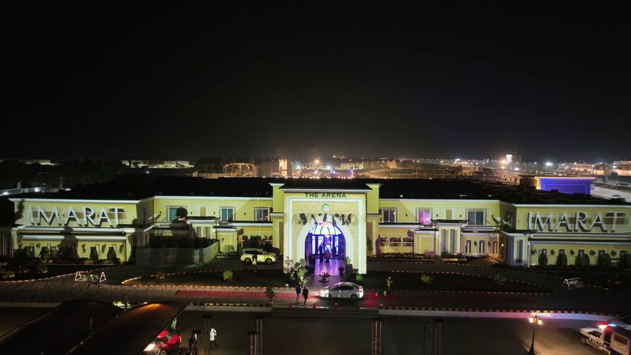

Projection mapping for hotels, wedding venues and ballrooms
How to plan projection mapping inside a hotel ballroom or wedding venue: surfaces, projector positions, ambient light, venue rules and a planning checklist.

Most of what we write about projection mapping concerns buildings, monuments and forts, where the sky is the ceiling and the audience stands in a car park or a plaza. A growing number of enquiries are for the opposite: a hotel ballroom, a wedding hall, a banquet lawn with a tent, a showroom or a conference foyer. The ideas carry over, but the constraints change. Ceilings are low, lighting is part of the venue, guests walk everywhere, and the room has rules about what can be hung from it. This note covers what we check when the surface is inside, or close to, a hospitality venue.
What changes when the show is indoors
Outdoors, the main enemies are distance, weather and ambient light from the city. Indoors, the problems are closer and more personal. Projectors sit nearer to the surface, so even a modest lens choice can cover a wall, but the audience is also nearer to the beam. A guest who stands up to take a photograph can put a shadow across the best part of the image, and a waiter carrying a tray through the light path will do the same.
The second change is control. A building facade is dark once the sun sets and the streetlights are what they are. A ballroom has chandeliers, exit signs, dimmable panels, candles on tables and sometimes daylight leaking around curtains. Some of that can be controlled by the venue's team, some cannot, and finding out which is a task for the site visit rather than the show day. Our note on projector brightness explains how ambient light eats contrast, and the same reasoning applies at smaller scale inside a room.
Choosing the surface inside a venue
The surface decides how good the result looks. Interior surfaces are usually more forgiving than weathered stone, but they bring their own problems:
- Painted walls. A smooth, light, matte wall is a good canvas. Gloss paint, wallpaper with a sheen and mirrored panels create hot spots and reflections.
- Drapes and fabric. Pleated drapes give a soft, textured image, but folds distort straight lines and the fabric moves when doors open. Tensioned, flat fabric panels behave much better.
- Dedicated screens and frames. A purpose-built screen or a set of white panels gives the cleanest result, and it lets us shape the canvas to the stage design rather than the architecture.
- Architectural features. Arches, columns and ceiling coves can be mapped, and they look impressive, but they need the same careful measurement as any building. See our guide to surveying a building for projection mapping; the principles are the same at a smaller size.
Dark carpet and dark upholstery help, because they absorb the light that spills off the surface. Pale marble floors and white ceilings do the opposite, bouncing light back into the room and lowering contrast. For anything that needs a deep black, we try to see the room with the lights down, not only in a brochure photograph.
Where the projectors go
Placement is the hardest indoor problem. Outdoors we can often put projectors on a platform across the street. Inside, the options are limited by ceiling height, guest layout and the venue's own rules.
Three positions are common. Rear projection places the projector behind a translucent screen, which keeps people and equipment out of the beam, but it needs space behind the screen and a screen material made for it. Ceiling or truss mounting puts the projector above the audience, which keeps the light path clear but requires approved rigging points. Floor or table positions at the back of the room are the simplest to set up and the most exposed to guests. Short-throw and ultra-short-throw lenses can shrink the distance a projector needs, at the cost of stricter alignment and sometimes lower brightness options, and our note on projector lenses and throw ratios covers how to match a lens to a distance.
Whatever the position, we ask the venue early about rigging. Many hotels do not allow anything to be hung from ceilings or fixtures without approval from their engineering team, and some have specific rules on weight, certified hardware and the people who may do the work. The guidance in our piece on rigging and mounting projectors is written for outdoor shows, but the discipline of safety lines, rated hardware and checked load paths applies just as much overhead in a room full of guests.
Content that suits a room
Content for a wedding or a hotel launch is judged at close range, often in a social setting where people are talking, eating and moving. That changes how we design it.
Slow, readable motion usually works better than the rapid cuts that suit a building seen from a distance, especially if guests will be seated for a while. Brightness and contrast should be set to flatter the room, not overwhelm it; a screen that is too bright in a dim hall is tiring and can wash out faces. Pay attention to how the content looks at the edges of the surface, where blending between projectors or the edge of a panel is visible up close. Our note on edge blending describes what to look for when more than one projector shares a surface.
Names, logos and dates need particular care. A couple's names or a brand mark must be spelled correctly and approved before the day, because there is no time to fix a typographical error once guests arrive. Flashing and very fast patterns are a comfort and safety question in a closed room with a mixed-age audience; our guide to flicker and strobe safety applies here too. And if sound is part of the programme, the room's own audio system, its echo and the speeches that may follow all need to be agreed in advance, as discussed in sound and visual sync.
Working with the venue and the schedule
The venue is a partner and a constraint in the same breath. Banquet halls are often in use until the evening before an event, so load-in may be limited to a few hours, and access routes such as lifts, service corridors and doors affect what equipment can be brought in. We ask for floor plans, ceiling heights, available power circuits, the position of fire exits and sprinklers, and who controls the lighting and air conditioning. Projectors give off heat and fan noise, and in a quiet ceremony fan noise matters, so the choice of equipment and its position should take it into account.
Fire and safety rules differ between venues, and we follow the venue's requirements rather than assuming that what worked elsewhere is acceptable here. Cables across walkways need covers or rerouting. Equipment must not block exits. Anything with a naked flame in the room, from candles to cold-spark effects, should be cleared with the venue before it appears in a design.
Indoor planning checklist
This is the list we run through before agreeing a design for a hotel, wedding or other indoor setting. It is a starting point, not a substitute for a site visit.
| Question | Why it matters |
|---|---|
| What is the surface, and how flat and light is it? | Decides image quality, warping effort and whether a dedicated screen is needed. |
| How high is the ceiling, and where can projectors go? | Sets lens choice, rigging needs and the risk of guests blocking the beam. |
| What lighting can be dimmed or switched off? | Ambient light reduces contrast; some venue lights cannot be changed. |
| Does the venue approve rigging, and who does it? | Avoids a design that cannot legally or safely be installed. |
| How long is the load-in, test and rehearsal window? | Controls how much we can align and refine before guests arrive. |
| Where do guests, staff and service routes pass? | Prevents shadows in the beam and tripping hazards on cables. |
| Which content details need approval in advance? | Names, dates, logos and any cultural or family sensitivities. |
| What are the noise, heat and fire-safety rules? | Ensures equipment suits a quiet room and meets the venue's requirements. |
Starting an indoor project with AKS
At AKS we have mapped buildings from Parliament House in Islamabad to Mohatta Palace in Karachi, and we apply the same measuring, testing and rehearsal habits when the audience is seated at tables. A room is smaller, but it is also less forgiving of small errors, because every guest is close enough to see them. If you are planning a hotel launch, a wedding or a private event and want visuals that work with the venue rather than against it, send us the venue name, the ceiling height and photographs of the space through the contact section, and we will tell you honestly what is possible.
Planning an indoor show or launch?
Tell AKS Creative Studio about the venue, the ceiling height and the occasion, and we will advise on what will work.
Start a conversation ↗